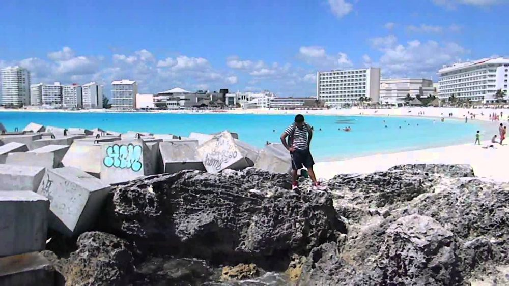
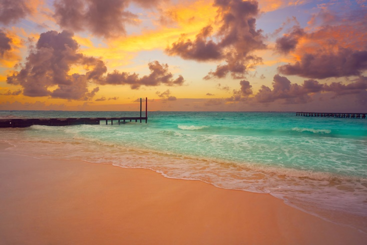
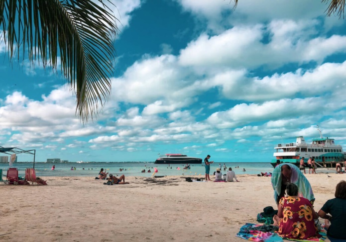
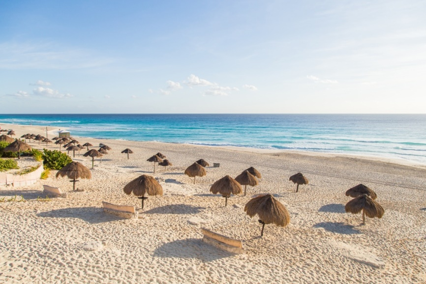
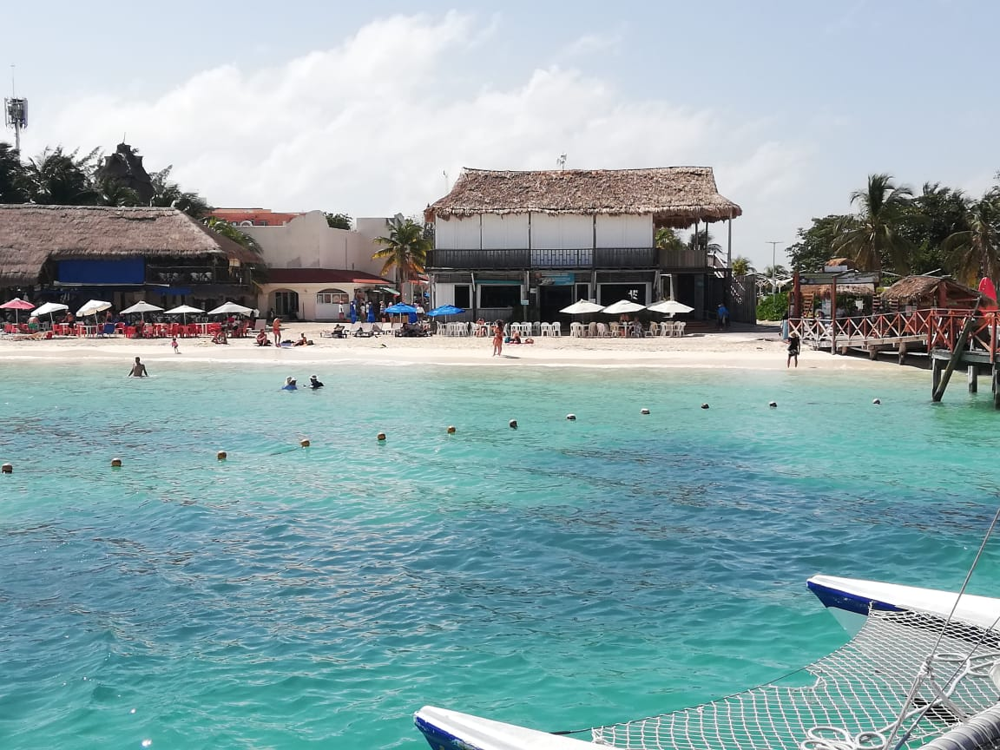

Playa Forum
 La Playa Forum esta ubicada en el kilomero 9.5 de la Zona Hotelera de Cancún, se encuentra a un lado del coco bongo y plaza Forum, en este lugar, el mar es más fuerte, destaca por su gran belleza y relajante ambiente, cuenta de un renal de aguas cristalinas cuenta con diferentes servicios para tu comodidad como para comer, hacer deportes acuaticos, cuenta con salvavidas y seguridad, y para tu mayor comodidad hay bares y restaurantes y todo ello debido a que se encuentra en el corazon de la zona hotelera para disfrutr de un rico ambiente.
Playa Caracol
 Esta playa se ubica en el kilometro 8.5 de la Zona Hotelera, es una de las más pequeñas, aquí el mar es mas calmo, es una de las playas más tranquilas en cuestión de gente,de igual manera tiene un muelle que es increible para tomar fotografias ya sea en compañia de tu familia o del mar y cuenta con tiendas de conveniencia para un mayor agrado y poder disfrutar de todo, el acceso a la Playa es público y gratuito, los servivios que ofrecen son varios como lo es el estacionamiento gratuito, la renta de camastros y sombrillas, sanitarios, lo unico malo es que no hay restaurantes cerca pero tienen cerca la Plaza Caracol.
Playa Langosta
 Esta playa se ubica en el kilometro 5 de la Zona Hotelera, bueno esta playa cuenta con un area de juegos, aguas tranquilas color turqueza y está más cercana al centro de la cuidad, el agua es seguro y con poca profundidad, estacionamiento gratuito, palapas, sanitarios y regaderas, de igual manera el acceso a la playa es público y gratuito, al su alrededor se puede observar una serie de excelentes bares y restaurantes, esta es una playa perfecta para las familias debido a que tiene menor cantidad de barcos y menos olas.
Playa Delfines
 Esta playa se ubica en el kilometro 18 de la Zona Hotelera, es una playa extensa, que goza de una impacable arena blanca y aguas cristalinas azuladas, el oleaje es fuerte, dispone de un gran de comodidades básicas que son completamente gratutitas como lo son un gran número de palapas, estacionamiento y un area gratuita para los niños; Tambien es un buen lugar para tomarse fotos en el mirador, ya sea en el amanecer o a medio día, y sobretodo y lo más importante es que cuenta con una limpieza y seguridad, esta es una de las playas que tiene mas visitas por parte de los equipos de futbol mexicano profesional debido a que es un buen lugar para realizar actividades fisicas y practicarlas.
Playa Tortuga

Esta playa se ubica en el kilometro 6.5 de la Zona Hotelera, esta es una de las playas más visitadas y aclamadas de la Zona Hotelera, debido a sus servicios y atracciones como lo son las actividades dentro del mar como el snorkel y buceo, o las caminatas por la playa, puedes caminar más de 10 metros sin encontrar una gran profundidad, una de sus características más importantes es que es una zona protegida en limpieza y seguridad, alrededor de la playa se pueden apreciar distintos restaurantes o bares de los cuales puedes disfrutar como de igual manera tiendas de conveniencia, y sobretodo cuenta con un estacionamiento, sanitarios, palapas y cuenta con un muelle para tomar Ferry para trasladarse a Isla Mujeres, el acceso a la playa es sumamente público y gratuito.